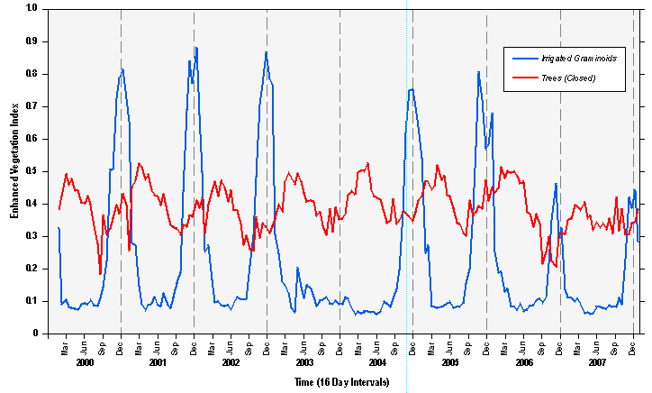
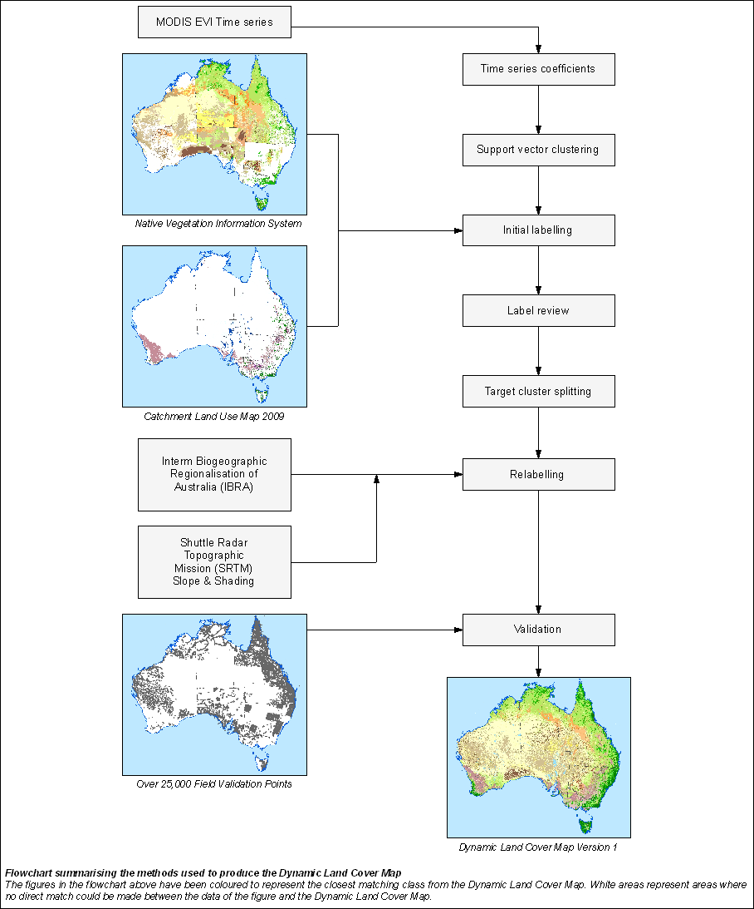

About Dynamic Land Cover
Land cover is the observed biophysical cover on the Earth’s surface. This includes native vegetation, soils, exposed rocks and water bodies as well as anthropogenic elements such as plantations, crops and built environments.
Remote sensing data recorded over a period of time allows the observation of land cover change over time or ‘dynamic land cover’. A key aspect of land cover is ‘greenness’ in vegetation. Greenness is directly related to the amount of photosynthesis occurring, and can be measured as an index such as the Enhanced Vegetation Index (Huete et al. 2002)
The Dynamic Land Cover Map presents land cover information for every 250m by 250m area of the country from April 2000 to April 2008. The classification scheme used to describe land cover categories in the Dynamic Land Cover Map conforms to the 2007 International Standards Organisation (ISO) land cover standard (19144-2). The Dynamic Land Cover Map shows Australian land covers clustered into 34 ISO classes. These reflect the structural character of vegetation, ranging from cultivated and managed land covers (crops and pastures) to natural land covers such as closed forest and sparse, open grasslands.
Information about dynamic land cover is critical for informed land management, and is increasingly required at national, state and regional levels with annual or monthly updates. The Dynamic Land Cover Map addresses the need for a single, nationally consistent and complete land cover reference for Australia, and provides a base-line for reporting on change and trends in vegetation cover and extent.
Development of the Dynamic Land Cover Map
The source data for the Dynamic Land Cover Map is a time series of Enhanced Vegetation Index (EVI) data from the Moderate Resolution Imaging Spectroradiometer (MODIS) on the Terra and Aqua satellites operated by NASA. The time series includes 186 snapshots of vegetation greenness for each 250m by 250m area across the continent over a 10 year period. An example of the time series displayed by different land cover types is shown in Figure 1
The EVI time series for each 250m by 250m area was characterised using 12 time series coefficients that describe its statistical, phenological and seasonal characteristics of the land cover. A clustering approach was applied to the 12 coefficients to define homogenous regions with similar greenness dynamics over time. Regions sharing similar time series coefficients were labelled using information derived from the 2009 Catchment Land Use Maps dataset and Native Vegetation Information System dataset provided by the Bureau of Rural Sciences.
Initial results were presented to a workshop of state and federal stakeholders from across Australia in September 2009. Feedback from the workshop was used to revise the cluster labels. The labelling was further refined by comparison with Photosynthetically Active Radiation data from CSIRO Land and Water and Foliage Projective Cover data from the Queensland Statewide Landcover and Tree Study program. Terrain effects were addressed by using digital elevation data from the Shuttle Radar Topographic Mission.

Accuracy
State agencies provided more 25,000 field validation sites to assess the accuracy of Dynamic Land Cover Map. As land cover classes are not generally clear-cut, but merge gradually from one to the other, a fuzzy-logic system (Zhang and Foody, 1998) was used to compare the 34 Dynamic Land Cover Map classes with the field data on a sliding scale. The classes of the sliding scale are: exact match such as trees open vs trees open, very similar such as trees open vs trees scattered, moderately similar as in trees open vs shrubs open, somewhat similar as in trees open vs shrubs closed, and complete mismatch as in trees open vs irrigated graminoids. The match between the field data and the Dynamic Land Cover Map was exact in 30% of cases, very similar in 35% of cases, moderately similar in 10% of cases, somewhat similar in 18% of cases and a complete mismatch in 7% of cases. These results show a high degree of consistency between the Dynamic Land Cover Map and extensive independent field-based datasets.
Feedback and Further Information
The land cover data and a technical report (which contains a comprehensive accuracy assessment) for this product is available from the Geoscience Australia website www.ga.gov.au/landcover. If you have information that could improve the accuracy of this map please use the form available at www.ga.gov.au/landcover to share the information. If you wish to provide feedback or find out about future releases of the DynamicLand Cover Map, please email us at landcover@ga.gov.au

REFERENCES:
A. Huete, K. Didan, T. Miura, E.P. Rodriguez, X. Gao, and L.G. Ferreira (2002) ‘Overview of the radiometric and biophysical performance of the MODIS vegetation indices.’ Remote Sensing of Environment, 83, 195-213
J. Zhang; and G. M. Foody (1998) ‘A fuzzy classification of sub-urban land cover from remotely sensed imagery.’ International Journal of Remote Sensing, 19 (14), 2722-2738
ACKNOWLEDGEMENTS:
The creation of the Dynamic Land Cover Map was made possible by contributions from a number of organisations across Australia. These contributions included the provision of data for the initial creation and labelling of the classes, comparative data to revise and validate the land cover classes, detailed validation work and participation in the Dynamic Land Cover Map workshop. We thank the following organisations for valuable contributions to the development of the Dynamic Land Cover Map:
Australian Collaborative Land Use Mapping Program (ACLUMP),
Australian Collaborative Rangelands Information System (ACRIS),
Commonwealth Scientific and Industrial Research Organisation (CSIRO),
Executive Steering Committee for Australian Vegetation Information (ESCAVI),
National Committee for Land Use and Management Information (NCLUMI),
Queensland Statewide Landcover And Tree Study (SLATS),
State and Territory Government Departments of New South Wales, The Australian Capital Territory, Northern Territory, Queensland, South Australia, Tasmania, Victoria and Western Australia.
This material is released under the Creative Commons Attribution 3.0 Australia Licence.http://creativecommons.org/licenses/by/3.0/au/
 © Commonwealth of Australia (Geoscience Australia) 2010.
© Commonwealth of Australia (Geoscience Australia) 2010.
Copies of this map may be downloaded from the
Geoscience Australia internet site at:
http://www.ga.gov.au, or by
contacting:
Sales Centre - Geoscience Australia
GPO Box 378 Canberra, ACT 2601
Phone (02) 6249 9966
Facsimile (02) 6249 9960
Email:
sales@ga.gov.au